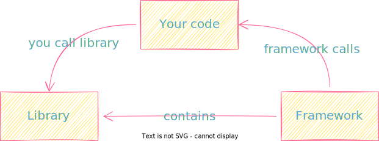

React 101: Introduction to React.js
Gokstad Akademiet
## Agenda Part 1. Introduction ℹ️ Part 2. Digging a little deeper 🕳️ Part 3. Getting our hands dirty 🛠️
## Part 1. Introduction ℹ️
## Hello! 👋 --- - Kudakwashe Kidwell Chambwe (27 yrs) -- - 🤱 + 🇿🇼 Zimbabwe 🛫 + 🇸🇯 Norge 🏡 Lørenskog ⏭ 🚌 Oslo📍 -- - Webstep / Oslo📍 -- - Frontend @ Bufdir -- - ABB, Bouvet, Vinmonopolet, Statnett/Fifty, ParkettPartner, Bufdir
 "The job determines the tool" - Me 👴
### JSX - JavaScript XML ```js // Am I better? const myElement = <h1>I a made using JSX!</h1>; // Or am I..? const myElement = React.createElement( 'h1', {}, 'I am too cool for JSX!' ); ```
### ES6 - ECMAScript 6 - Standard for Javascript - 6th version of ECMAScript. 2015. -- - Variables = `let, const, var` -- - Arrow functions = function notation `let myFunc = () => {};` -- - Array methods = `.map(), .join(), .pop(), .push()` etc -- - Ternary operator = `isSomethingTrue ? yes : no` -- - Spread operator = `var1, var2, ...the-rest-here`
### CDN - Content Delivery Network - Group of servers spread across many locations - Used for delivering stylesheets and javascript files (static assets) og libraries like as links (Bootsrap, JQuery, React, ...) ```html <script src="https://code.jquery.com/jquery-3.6.0.min.js" integrity="sha256-/xUj+3OJU5yExlq6GSYGSHk7tPXikynS7ogEvDej/m4=" crossorigin="anonymous"> </script> ```
### Components - Independent and reusable bits of code. e.g. Car, Person, Book... - Works in isolation. - Either "Class" or "Function" Components. - Start component names with a capital letter. `MyComponent, Header, ComponentWithVeryLongName`
### Class Components - Used to be the only way to create Componets with state lifecycle events - React Hooks have made Class Components less favorible. -- - 👍️ Come with built-in state (i.e. `this.state = {isLoading: true}`) - 👎️ Write more code to achieve the same as FC; more complex and less readable in comparison. -- ## Example ```js import React, { Component } from "react"; class Header extens Component { render() { return <h1> Title <h1 /> } } ```
### Function Components - 🆕 way of writing Components; 👍️ by React. - Essentially like Class functions just written as functions; written with less code, easier to understand. - If state and lifecycle methods are needed; use Hooks. -- - 👍️ Faster, easier and cleaner in terms of developing, understanding and testing the code. - 👎️ Nothing really negative, but some may have other opinions.. 😒 -- ## Example ```js // ES6 import React from "react"; const Header = () => { return <h1> Title </h1> } import React from "react"; function Header() { return <h1> Title </h1> } ````
### "Props" aka Properties - Object arguments used for passing data between components. -- ## Given this... ```js // ./FirstComponent.jsx <GreetComponent name={"Ola"} /> ``` -- ## You get... ```js // GreetComponent.jsx - with de-structuring const GreetComponent = ({name}) => { return <h1> Hola, {name}! </h1> } // GreetComponent.jsx - without de-structuring const GreetComponent = (props) => { return <h1> Hola, {props.name}! </h1> } ```
### Events - Just like HTML events; allow us to person actions based on user "events"or interactions - Events like; click = `onClick`, mouseover = `onHover`, change = `onChange`... - 👍️ `onClick={sendMessage}` - 👎️ `onClick="sendMessage()"` -- ```js const GetTriggered() { const shotsFired = (a) => { alert(a); } return ( <button onClick={() => shotsFired("Mr. Big Forehead")}> Fire shots! </button> ); } ```
### Conditional - React lets you render componets conditionally think `if()` statements -- ## Given this... ```js const MoneyBroke = () => { return <h1>No money..<h2 /> } const MoneyRich = () => { return <h1>Chaa-ching!<h2 /> } ``` -- #### `if()` statement ## Method #1: ```js const BorrowMoney = ({ gotMoney }) => { if (gotMoney) { return <MoneyRich /> } return <MoneyBroke /> } ``` -- #### Logical `&&` Operator ## Method #2: ```js const BorrowMoney = ({ gotMoney }) => { { gotMoney && return <MoneyRich /> } } ``` -- #### Ternary Operator `condition ? true : false` ## Method #3: ```js const BorrowMoney = ({ gotMoney }) => { return ( { gotMoney ? <MoneyRich /> : <MoneyBroke /> } ); } ```
### Lifecycle methods - Methods for React to incite action when; a component is mounted, is unmounted, about to be updated etc. - On mounting: `componentDidMount()` - On umounting: `componentWillUnmount()` - But then came "Hooks"...
### React Hooks or Lifecycle Hooks - Hooks allow us to "hook" in React features like state and lifecycle methods - Hooks must be imported; - `import { useState } from 'react'` - Rules; - Can only be called inside function components - Can only be called on the top level of a component - Cannot be condtional -- ## `useState` - Allows to track state in FC - State = data or props that need to be tracked in an app - Comprises of: 1. inital state 2. a function to update the state 3. argument as the initial state - `cosnt [color, setColor] = useState("red")` -- ```js // Examples for Car (Component) const [brand, setBrand] = useState("Ford"); const [model, setModel] = useState("Mustang"); const [year, setYear] = useState("1964"); const [color, setColor] = useState("red"); ```
## Part 2. Digging a little deeper 🕳️
### Few things before we get started ⏲️
### We need these things first: - Editor; I use [VSCode](https://code.visualstudio.com/download) ⬇️ - Github/git - Version Control & Hosting Code - [Node](https://nodejs.org/en/download/)⬇️ (`v.16.15.0`) or @latest - [npm](https://docs.npmjs.com/downloading-and-installing-node-js-and-npm)⬇️ (`v8.6.0`) or @latest -- ### Optionals 🎖️ - [NVM](https://github.com/nvm-sh/nvm#installation)⬇️ (Node Version Manager) - [HomeBrew](https://docs.brew.sh/Installation)/[Choco](https://chocolatey.org/install) ⬇️
### Based on what we know so far: ```xml <!doctype html> <html> <head> <title>Our Basic HTML Page</title> <meta name="description" content="Our first page"> </head> <body> <h1> Hello World!</h1> </body> </html> ```
### This can give us React 🤯 ```html <!doctype html> <html> <head> <title>Our slightly fancier React HTML Page</title> <script src="https://unpkg.com/react@18/umd/react.development.js" crossorigin> </script> <script src="https://unpkg.com/react-dom@18/umd/react-dom.development.js" crossorigin> </script> <script src="https://unpkg.com/@babel/standalone/babel.min.js"> </script> </head> <body> <div id="mydiv"> <!-- This element's contents will be replaced. --> </div> <script type="text/babel"> function Hello() { return <h1>Hello World!</h1>; } ReactDOM.render(<Hello />, document.getElementById('mydiv')) </script> </body> </html> ```
#### Whats really happening here: - The first two scripts let us write React code into our JS `scripts` 1. `react@18` = Holds the **react source** for components, state, props etc. 2. `react-dom@18` = The **glue** between React and the DOM (i.e. mounting the app to index i.e. `ReactDOM.render()` ) - Babel (JS compiler) allows us to write JSX syntax and ES6 in older browsers -- But... #### This isn't suitable for production releases! ⚠️
### `create-react-app` - Easy-to-setup environment for React, and according to docs; "[...] best way to start building a new single-page application in React." -- - "[Create React App](https://create-react-app.dev/docs/getting-started/)" or `create-react-app` ⬇️ -- - Official way to create Single-Page React Apps -- - "Start & get going" approach -- - Under the hood; Babel (JS **compiler**) and `webpack` (JS **bundler**) 🥴 -- - You don't need to know anything about them! 🤩
### Step-by-step 🚶 - First run the following command to create a React App called `my-first-app` ```shell $ npx create-react-app my-first-app ``` -- - To move into the project folder you just created: ```shell $ cd my-first-app ``` -- - Run this command to start the development server ```shell $ npm start ``` -- - A new browser window should open with your brand new React App. - If not, then try typing `localhost:3000` in the adress bar. -- ## Congratz, its an app! 🤱👏
### How to structure things naisly 🗂️ - So many different opinions, it's mostly about preference - ...but most people agree on certain things -- - Decouple logic from UI -- - Single Responsibility Principle - a component should have ONE reason to change, one specific purpose. -- - Keep your code DRY. Don't Repeat Yourself, but sometimes code duplicates are a "necessary evil" -- - Use Functional Components (FC) instead of Class. -- - Follow the "React way" of creating separate folders for all files related to component -- - Allways follow naming conventions e.g. `PascalCase` for Components etc. `const visible = true` < `const isVisible=true` -- - Keep Components as simple as possible - see Single Responsibility Principle -- - Consider using Typescript (*not so important in the beginning*)
### `create-react-app` - - - - -